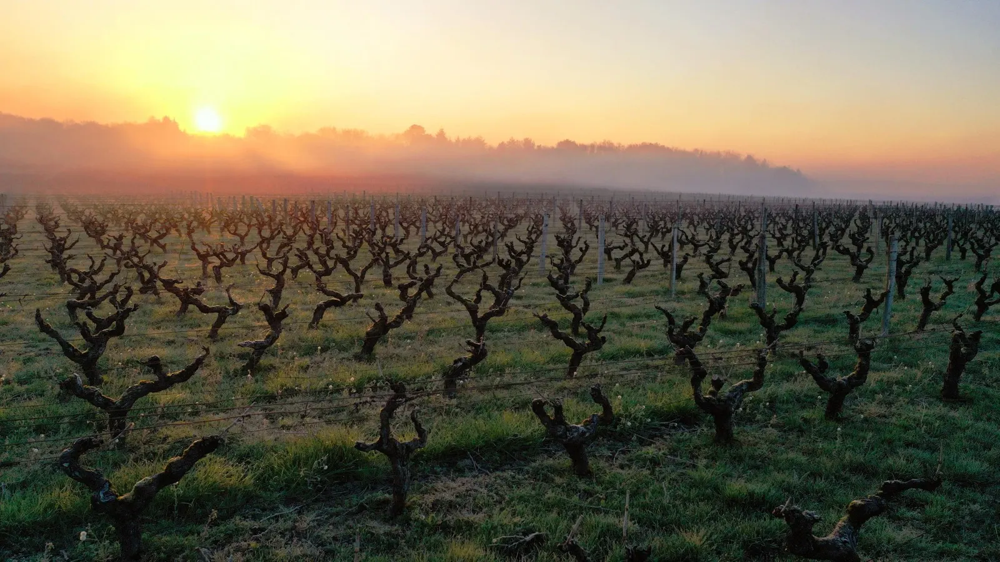
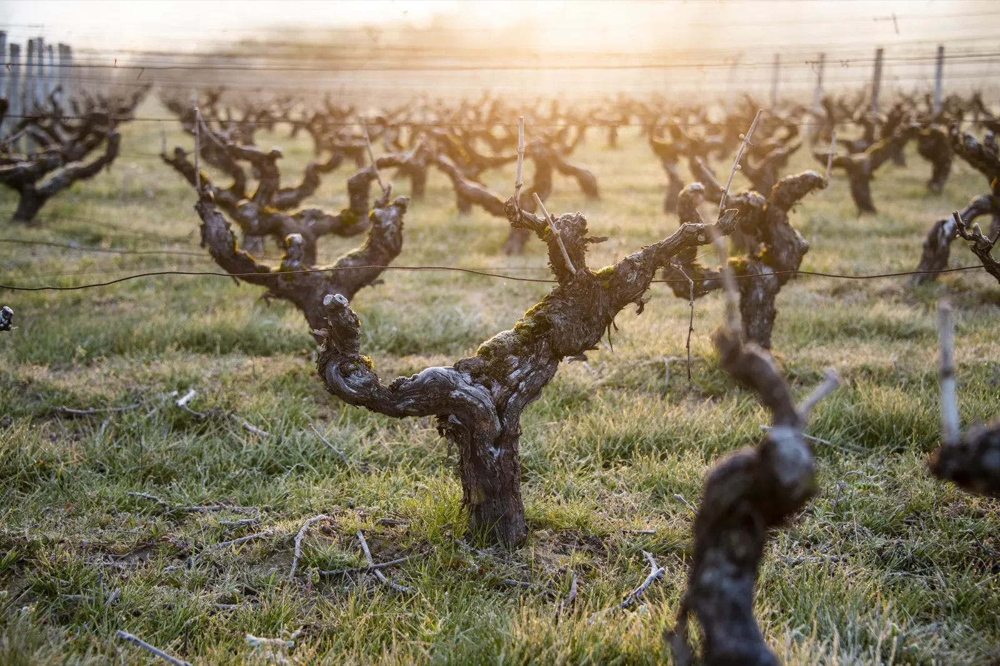
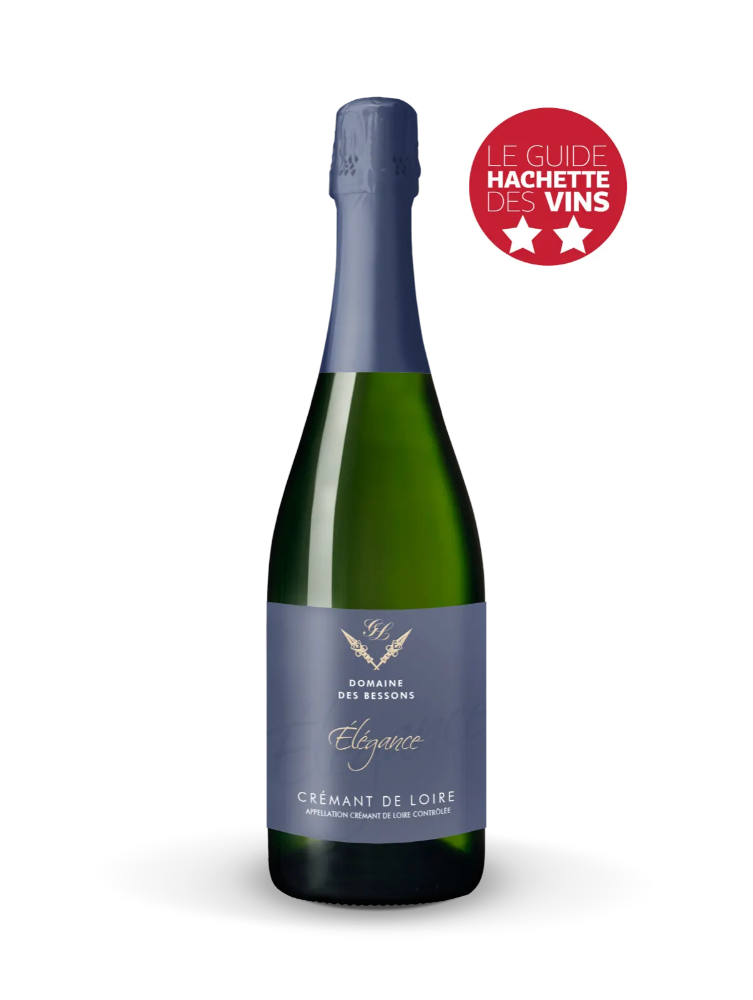
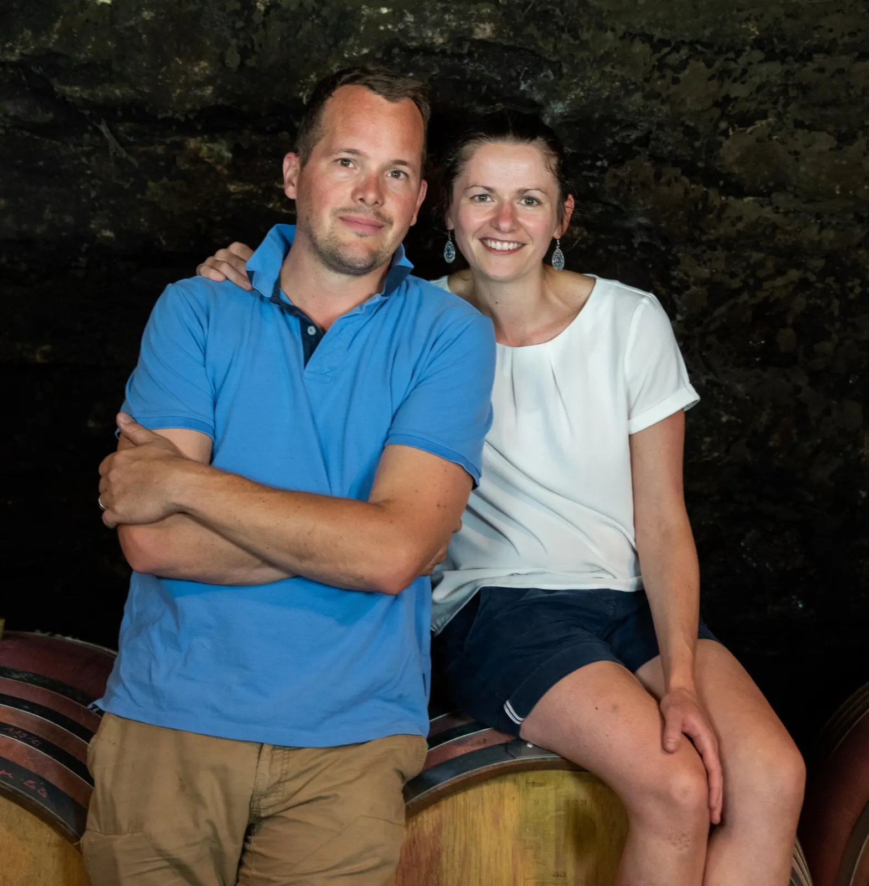
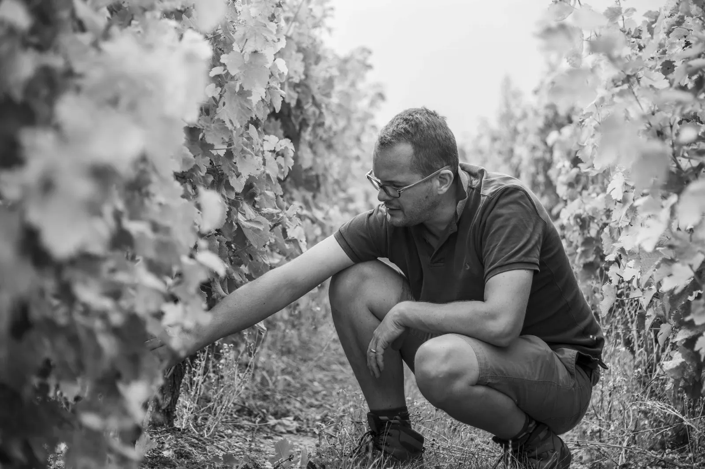
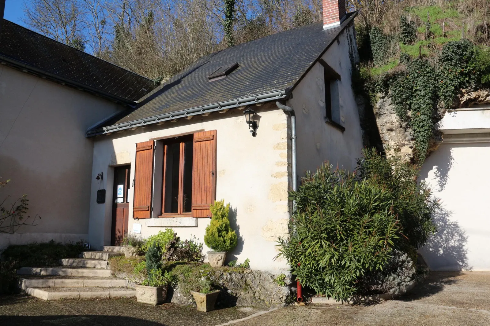
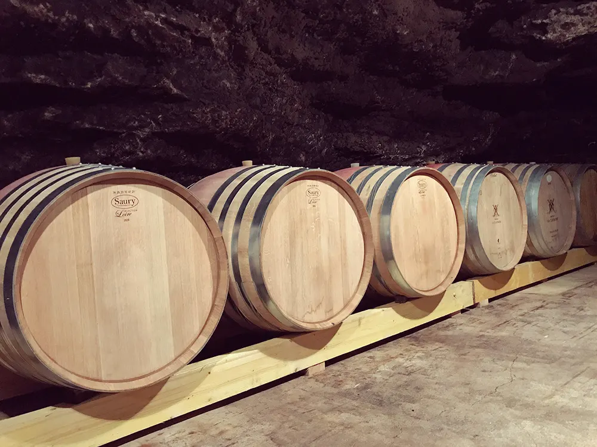

Une viticulture indépendante, au cœur de la Loire.
Touraine Amboise, Touraine et Crémant de Loire, vinifiés traditionnellement dans notre cave troglodytique de Limeray, tout près d'Amboise et de son château.
- Environ 10 hade vignes près d'Amboise
- 6 cépagesSauvignon, Chenin, Côt…
- 3 appellationsTouraine, Touraine Amboise, Crémant de Loire
- HVEHaute Valeur Environnementale
- À la mainvendanges en caissette

Le terroir des vins de Touraine Amboise.
Terroir historique de Chenin et de Côt, modelé par la Loire depuis des millénaires, notre vallée bénéficie d'un climat tempéré par le fleuve et d'une pluviométrie modérée : nos vins y développent un caractère frais et des arômes subtils.
- Situation
- Sur la rive droite de la Loire, le vignoble surplombe le village viticole de Limeray, tout près d'Amboise.
- Sols
- Entre coteaux argilo-calcaires et plateau sablo-limoneux.
- Cépages
- Nos principales cuvées naissent du Sauvignon blanc et gris, du Chenin ou du Côt.
- À la vigne
- Certifiés Haute Valeur Environnementale : vignes enherbées, sans engrais ni désherbant chimique, sans insecticide, acaricide ni anti-botrytis.
Du raisin à la bouteille, dans le respect de la tradition.
Issus de nos plus belles grappes, nos vins reçoivent les meilleures conditions pour exprimer tout leur potentiel. Pour nos blancs et nos rosés :
- 1
Vendanges manuelles
En caissette, pour toute la gamme, afin de préserver l'intégrité des raisins jusqu'à la cave.
- 2
Pressurage à froid
Aussitôt les raisins récoltés.
- 3
Fermentation lente
Autour de 18 à 20 °C, pour garder la finesse des arômes. Levures naturelles du raisin depuis la vendange 2023.
- 4
Élevage sur lies fines
Pendant plusieurs mois : le vin y développe toute sa complexité aromatique.
Et nos rouges
Éraflés, encuvés le temps nécessaire à l'extraction de leurs tanins, puis décuvés et élevés sur lies fines ; la cuvée Prestige, elle, passe près d'une année en barrique.
Nos vins.
Nos cuvées naissent en Touraine Amboise, en Touraine et en Crémant de Loire. En voici quelques-unes, telles que nous les décrivons.

L'impromptue
Touraine Amboise, Chenin blancVin blanc sec de gastronomie. Une macération en cours de fermentation en cuve inox lui apporte du gras et de l'amplitude ; huit mois d'élevage sur lies lui donnent sa complexité.
Médaille d'argent au Concours Général Agricole de Paris 2026. 2 étoiles et coup de cœur du Guide Hachette 2025.Les Silex
Touraine Amboise, Chenin blancBlanc sec, charpenté, minéral. Issu de nos parcelles de Chenin implantées en premier coteau depuis plus de 60 ans, sur un terroir de silex.
Les Chainées d'André
Touraine Amboise, CôtRouge subtil, aux arômes de petits fruits noirs et de réglisse. Elle doit son nom à André, ami du domaine, qui planta quelques longueurs de Côt de la parcelle des Clos de Beauce.
Prestige
Touraine Amboise, CôtRouge puissant et rond, de vieilles vignes de Côt en premier coteau, élevé en barriques de chêne de 400 L, au minimum durant un an.
Élégance
Crémant de Loire, Chenin et ChardonnayUn crémant fin, à l'effervescence délicate et aux bulles très fines.
2 étoiles au Guide Hachette 2025.
La commande se fait par e-mail à contact@domainedesbessons.com ou par téléphone au 02 47 30 09 10, avec retrait au caveau, 113 rue de Blois à Limeray.


Un bon vin est travaillé avec passion et savoir-faire.
Créé dans les années 1980 par François et Brigitte Péquin, le Domaine des Bessons continue son histoire depuis le début de l'année 2021 avec Grégory et Isabelle Lemaire.
Leur rencontre date de 2018 : François et Brigitte souhaitaient voir leur domaine perdurer. Ils ont travaillé ensemble de nombreuses fois entre 2018 et 2020, puis tout au long de 2021, après la reprise du 31 décembre 2020.
L'objectif reste le même : pérenniser le domaine dans le respect de l'environnement, avec des vins toujours vinifiés traditionnellement dans la cave troglodytique.
Lire toute l'histoire« Respecter son terroir, travailler sa vigne, vinifier et élever son vin, mettre en bouteille sa production dans sa cave. »
Parmi les principes de la charte des Vignerons Indépendants, que le domaine a signée.


La cave troglodytique et le caveau de dégustation.
Nous serons toujours heureux de vous accueillir dans notre cave troglodytique et notre caveau de dégustation, pour découvrir nos Touraine Amboise, Touraine et Crémant de Loire. Pour vous accueillir au mieux, il est préférable de réserver votre visite.
- Label « Cave touristique du vignoble de Loire », InterLoire
- Membre des Vignerons Indépendants
- Certifié Haute Valeur Environnementale depuis la récolte 2020
Restons en contact.
Une visite, une dégustation, une commande ou simplement une question : écrivez ou appelez, nous vous répondrons dans les plus brefs délais.
- La boutique
- 02 47 30 09 10
- Grégory Lemaire, artisan vigneron
- 06 52 98 32 59
- Adresse
- Domaine des Bessons
113 rue de Blois, 37530 Limeray - Commandes
- Par e-mail ou téléphoneretrait au caveau